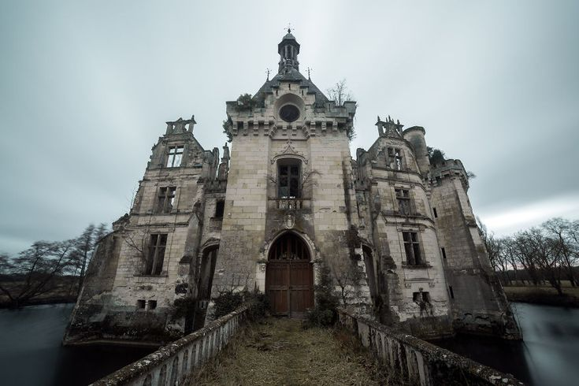

Архитектура XVIII(18) века восхитительна, но именно этот заброшенный замок еще и интересен своей историей! О нет, кажется его владелец не в восторге от гостей! Кажется граф уснул, но дверь по прежнему закрыта! Найдите способо выбраться пока часы не пробьют полночь, но не следует забывать и о хозяине, который очень чутко спит...
участникам младше 16 лет требуется расписка от родителей
Каблуки и высокая платформа запрещены!
Не рекомендуется людям с клаустрофобией
За испачканную одежду организатор ответственности не несет!
Квест расчитан на 90 минут, но вы можете пройти его быстрее, все зависит от вашей скорости.
Да, только об этом надо сообщить администратору не позднее, чем за 2 дня до проведения квеста.
От 2 до 6 игроков.
Нажмите кнопку «Забронировать» выше и вы перейдёте в Telegram‑бота. Далее следуйте инструкции в боте.
Минимальный возраст участников — 14 лет, участники младше не допускаются даже в присутствии совершеннолетних.
Мы не призываем вас ходить по заброшенным зданиям! Квесты проводятся исключительно в ПРОВЕРЕННЫХ и СОГЛАСОВАННЫХ местах! Мы заботимся о вашей безопасности!